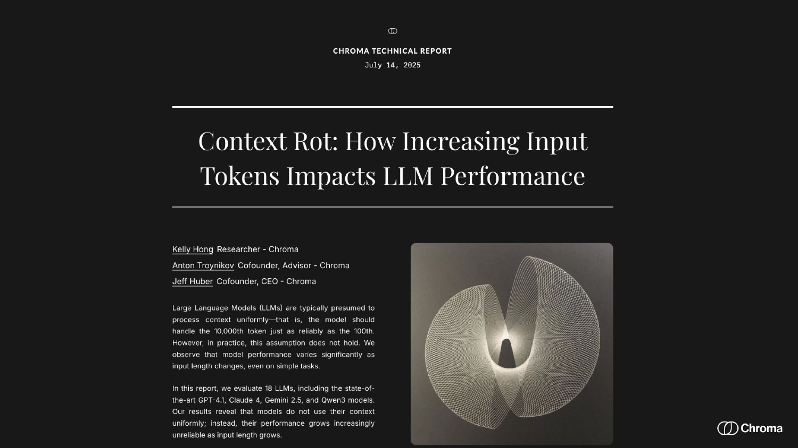
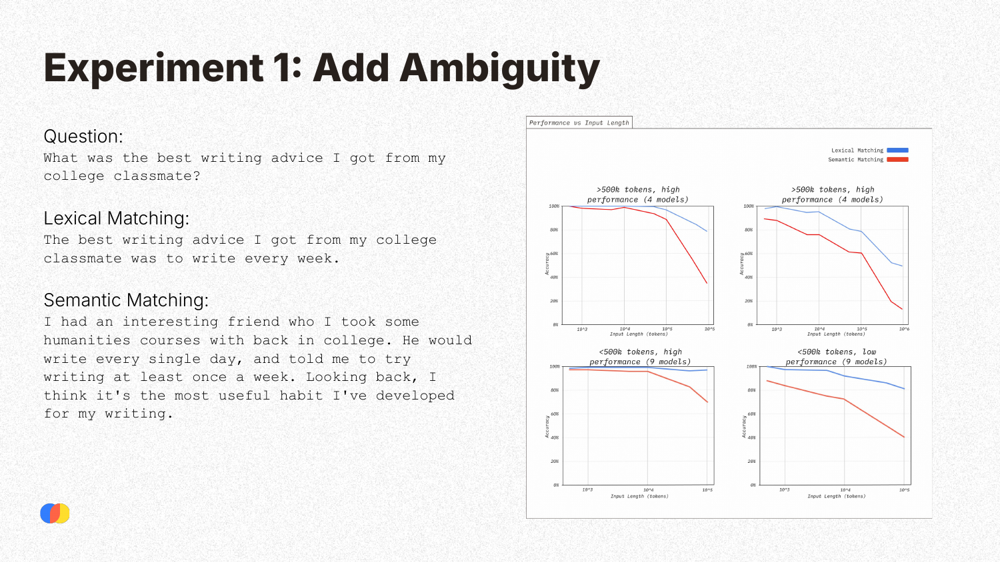
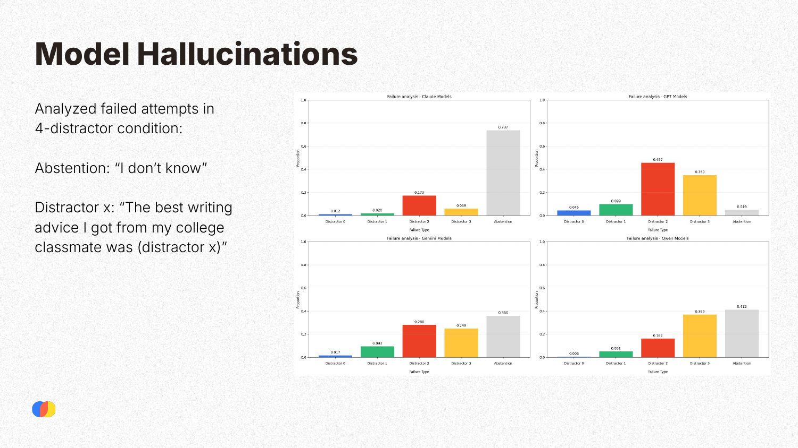
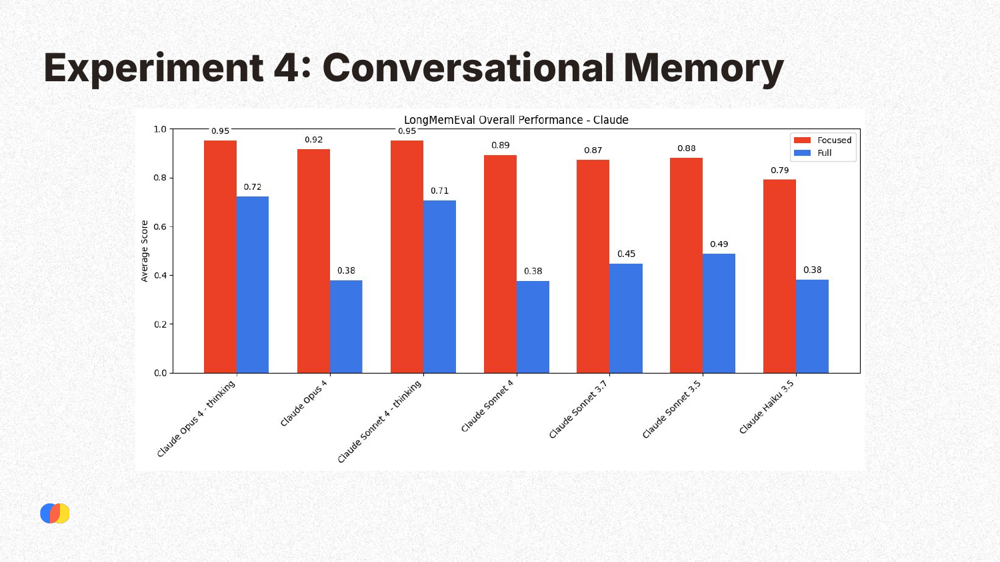

P6: Context Rot
As part of our LLM Evals course, I hosted Kelly Hong, a researcher at Chroma, to discuss her research on “Context Rot.” Despite the narrative that RAG is dead because of large context windows (e.g. 1 million tokens), Kelly’s research shows that performance is not uniform. As you add more information, models become increasingly unreliable, even on simple tasks. This phenomenon, which Kelly coined as “Context Rot,” is worth paying attention to if you are building AI applications. Kelly’s talk breaks down the experiments that uncovered this issue and highlights why thoughtful context engineering and retrieval is more important than ever.
Below is an annotated version of her presentation.
👉 These are the kinds of things we cover in our AI Evals course. You can learn more about the course here. 👈
Annotated Presentation

This slide introduces the concept of “Context Rot,” a term coined by Chroma to describe how an LLM’s performance becomes increasingly unreliable as the length of its input context grows. The research evaluates 18 state-of-the-art LLMs and finds that, contrary to the assumption of uniform context processing, performance degrades significantly with longer inputs.

Major LLM providers prominently advertise massive context windows—often 1 million tokens or more—as a key feature of their frontier models like Gemini, Claude, and GPT-4.1. This marketing suggests that models can effectively process and utilize vast amounts of information.

The availability of large context windows has led to the common assumption that providing more context is always beneficial. This has inspired new use cases, such as large-scale code analysis and extensive document synthesis. Benchmarks like the “needle in a haystack” test, which often show near-perfect retrieval accuracy across the entire context window, appear to reinforce this assumption, creating a potentially misleading picture of model capabilities.

The Needle in a Haystack (NIAH) test is a simple retrieval task where a specific fact (the “needle”) is placed within a long document (the “haystack”), and the model is asked to retrieve it. Kelly explains that this benchmark primarily assesses direct lexical matching. As seen in the example, the query and the needle share many of the same words (“best writing advice,” “college classmate”). This makes the task relatively easy and not representative of real-world scenarios, which often require more complex semantic understanding where direct word overlap is minimal.

To test performance on more realistic tasks, Chroma’s first experiment introduced ambiguity. They compared a lexical matching task (similar to the original NIAH) with a semantic matching task, where the answer contained the same core information but was phrased differently, requiring the model to understand meaning beyond direct word overlap. The results show a clear trend: while performance on lexical matching remains relatively high, performance on the more complex semantic matching task degrades significantly as the input context grows longer.

This slide illustrates the real-world implications of the previous experiment using a financial report analysis example. A user is unlikely to know the exact phrasing in a document to formulate a perfect lexical query. Instead, they will ask a more ambiguous, semantic question like “How is our overseas expansion going?” This requires the model to connect “overseas expansion” to specific countries and revenue figures. As Experiment 1 showed, this is precisely the kind of task where performance degrades with longer contexts.

The second experiment investigates how performance is affected by distractors—pieces of information that are semantically similar to the correct answer but are incorrect. In the example, the correct “needle” is writing advice from a “college classmate.” The distractors include similar advice from a “college professor” or advice about writing essays in different styles. These distractors mimic the kind of noise often found in real-world documents.

This slide provides a simple visual model of the experiment. The researchers tested the LLM’s performance under three conditions: with no distractors, with one distractor, and with four distractors placed in the context alongside the correct needle.

The results of the distractor experiment show two clear trends. First, across all model groups, performance degrades as the input length increases. Second, performance also degrades as the number of distractors increases. The combination of long context and distracting information proves particularly challenging for LLMs, causing a significant drop in accuracy.

This experiment is highly relevant to real-world applications, especially in domain-specific contexts like finance or law. Documents in these fields often contain highly similar, templated information where only small details (like a year or a name) differ. These similar pieces of information act as natural distractors, making it difficult for the model to retrieve the correct fact, a problem that is exacerbated by longer contexts.

When the models failed in the 4-distractor condition, the researchers analyzed how they failed. A key finding was that models often hallucinate by confidently providing an answer based on one of the distractors, rather than abstaining (stating “I don’t know”). This tendency varies by model family: Claude models are more likely to abstain when uncertain, whereas GPT models have the highest rate of hallucination, confidently returning an incorrect answer.

This experiment tested whether models process context in a structured, order-sensitive manner. A “needle” (a sentence about writing advice) was placed in a coherent essay. Because the needle disrupts the essay’s logical flow, it stands out. The same needle was also placed in a “haystack” of randomly shuffled, unrelated sentences, where it should logically blend in more. The hypothesis was that the model would find it easier to retrieve the needle from the coherent essay where it was an anomaly.

Counter-intuitively, the results showed that models performed slightly better when the haystack was randomly shuffled. This surprising finding suggests that LLMs do not necessarily process context in the linear, structured way humans do and that a disruption in logical flow can actually make a key piece of information harder, not easier, to find.

This experiment tested conversational memory using the LongMemEval benchmark. Models were tested under two conditions: a “focused” condition with only the relevant conversational history (around 100 tokens), and a “full” condition where the context was padded with irrelevant conversations up to 120k tokens. The results clearly show that all Claude models perform significantly better in the focused condition, demonstrating that irrelevant information degrades performance quickly.

This experiment involved a very simple task: replicating a given text of repeated words. Despite the simplicity, all models showed a significant drop in performance as the input length increased. Some models exhibited strange failure modes; for example, at long input lengths, Claude models would refuse to generate the output, citing concerns about copyrighted material, while Gemini models would produce completely random outputs.

The research provides three takeaways:
- LLM performance is not uniform across input lengths, even for simple tasks.
- Simply having the right information in the context is not enough; how that information is presented matters significantly.
- As a result, thoughtful context engineering is critical for building reliable AI applications.

Kelly provides a practical example of context engineering for a coding agent with a long-running task.
- Naive Approach: Append the entire conversation history, including every tool call and output, to the context. This causes the context to grow quickly and become bloated with irrelevant information (e.g., the full content of a file read), leading to context rot.
- Better Approach: Use a main “orchestrator” agent that breaks the task into subtasks and spawns “subagents” for each one. Each subagent operates with its own clean, focused context. It completes its subtask and returns only the most relevant information to the orchestrator, which maintains a concise, filtered history. This prevents context overload and improves reliability.

The presentation concludes by directing the audience to the full technical report and other related research on Chroma’s website, research.trychroma.com.
Q&A Session
Is the Needle in a Haystack (NIAH) benchmark pointless? (Timestamp: 06:54) It’s not pointless, but its utility has diminished. It was useful for evaluating older models, which did show performance degradation on the task. However, modern frontier models can now perform very well on this simple, lexically-driven task, which makes the benchmark unrepresentative of real-world use cases that require deeper semantic reasoning.
Did the research find that one model consistently resists context rot better than others across all tasks? (Timestamp: 23:57) No, performance was “all over the place” and highly task-dependent. There was no single model that ranked first across all experiments. For example, Claude Sonnet 4 performed best on the repeated words task, while GPT-4.1 was the top performer on the Needle in a Haystack task. Each model has different strengths, and no model currently excels at all long-context tasks.
What is your advice for developers trying to find and mitigate context rot in their applications? (Timestamp: 27:32) Start by qualitatively analyzing your system. Run a few examples with both short, focused context and long context bloated with irrelevant information. Compare the outputs: what did the model miss with the long context? What irrelevant information could be removed? There’s no single, generalizable solution, as optimal context engineering is highly application-dependent. A good starting point is to carefully examine the data you’re providing to the model and how you can make it more concise and relevant.
Prior research found a U-shaped retrieval curve, where information at the very beginning and very end of the context is recalled best. Does that still hold true? (Timestamp: 29:06) In Chroma’s experiments, they did not observe this U-shaped pattern. They tested placing the “needle” at various positions throughout the context—from the beginning to the middle to the end—and found no consistent performance advantage for any particular position. While putting important information at the start or end is a common piece of advice, this research suggests it may not be a reliable solution for mitigating context rot.
👉 These are the kinds of things we cover in our AI Evals course. You can learn more about the course here. 👈
Video
Here is the full video: